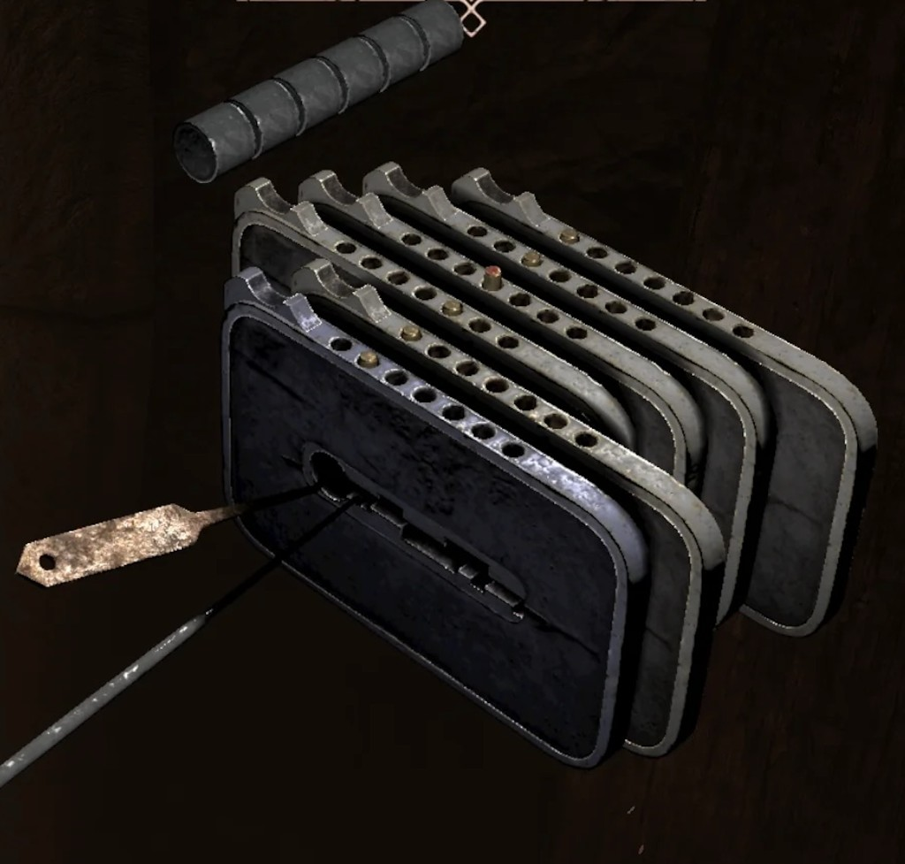

Gothic Lock Breaker
Gothic Lock Breaker is a free, beginner-friendly browser solver for Gothic 1 Remake lockpicking. Its compact three-section UI maps plates and couplings, then returns edge-safe turn-by-turn walkthroughs — not net-turn totals alone.
I · The Lock
II · Tumblers
How to map your lock
- Count the locks and pick the matching number above.
- For each lock, set its starting hole (1 = wall, 4 = notch).
- Turn that lock once in-game. Each other lock that moves — mark With (same way) or Against (opposite). With/Against apply to every turn direction for that pair.
- Grinding means a pin hits wall 1 or 7 — not the same as an Against coupling.
Lockpicking tier (Fingers, Old Camp)
Training does not change how plates move on a legal turn — only mistake budget and (at Master) link removal after a broken pick.
| Tier | Wall mistakes | On pick break |
|---|---|---|
| Untrained | 2 | Lock resets |
| Trained (10 LP + 100 ore) | 4 | Progress kept |
| Master (20 LP + 200 ore) | 6 | Progress kept; one link removed |
At Master, if you've snapped picks on this lock, set how many under I · The Lock, then tap Gone beside each dropped coupling on the tumbler cards before re-solving.

Locks are numbered 1 (front) to N (back). Cards stack back at top, front at bottom, matching the in-game view. Hole 4 is the notch; holes 1 and 7 are walls.